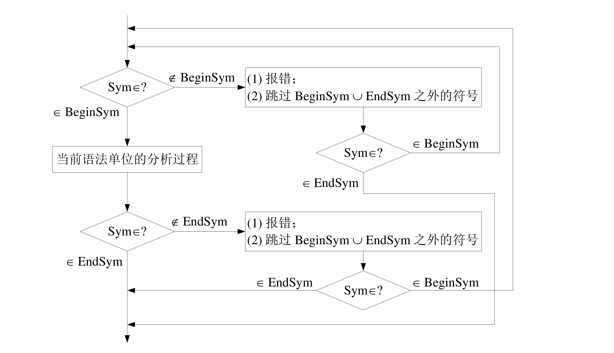
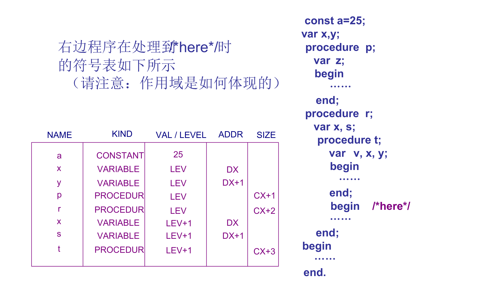
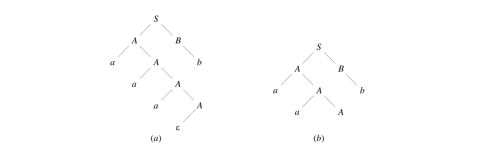
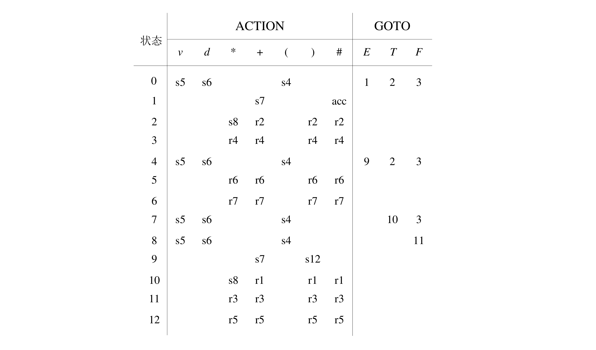
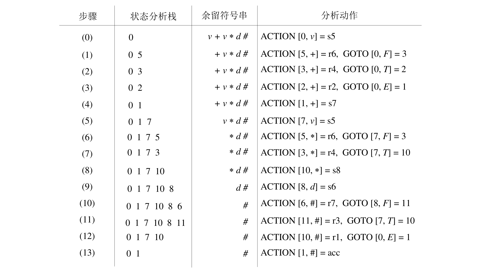

语法分析¶
语法分析的核心问题：识别与解析。
对任意上下文无关文法 G = (V, T, P, S)，和任意 W \in T^*，是否有 w \in L(G)？若成立，则给出分析树或（最左）推导步骤；否则报错。
自顶向下语法分析¶
思想：从文法开始符号出发进行推导；每一步推导都获得文法的一个句型，直到产生出一个句子恰好是所期望的终结符串。
带回溯的自顶向下分析¶
自顶向下分析过程的两类非确定性：
- 选择哪一个非终结符展开；
- 对于选定的非终结符选择哪一个产生式。
最朴素的想法是采用试探和回溯。
改进方法：在每一步推导中，总是对最左边的非终结符尽心替换，仅有产生式选择是非确定的，分析成功可得到一个最左推导。
自顶向下预测分析¶
通过向前扫描（lookahead）若干个字符进行确定性推导（并非所有文法都可以做到）。
First 和 Follow 集合¶
First 集合¶
定义：设上下文无关文法 G = (V_N, V_T, P, S)，对于 \alpha \in (V_N \cup V_T)^* 定义：
直观理解：\text{First} 集合是一个对于一个 句型 而言的，代表着该句型能够推导出的 开头字符 集合。
对于语法分析，我们关心所有可能句型的 \text{First} 集合，即
可以迭代计算所有 x \in X_G 的 \text{First} 集合：
- 初始化：所有非终结符和 \varepsilon 集合为自身（\text{First}(x) = \{x\}），否则为 \Phi。
- 重复直到所有的集合都不再变化：
- 对于 A \rightarrow \varepsilon \in P，置 \text{First}(A) = \text{First}(A) \cup \{\varepsilon\}。
- 对于 y_1y_2 \dots y_k \in \{v | A \rightarrow u \in P, v \text{ is suffix of } u\}, k \ge 1。 如果存在 i，\varepsilon 在 \forall 1 \le j \le i - 1, y_j 的 \text{First} 集合中但不在 y_i 的集合中，则 $$ \text{First}(y_1 \dots y_k) = \text{First}(y_1) \cup \dots \cup \text{First}(y_i) - \varepsilon $$ 否则不需要 -\varepsilon，即 $$ \text{First}(y_1 \dots y_k) = \text{First}(y_1) \cup \dots \cup \text{First}(y_k) $$
- 若有 A \rightarrow y_1 y_2 \dots y_k，则置 $$ \text{First}(A) = \text{First}(A) \cup \text{First}(y_1y_2 \dots y_k) $$
Follow 集合¶
定义：设上下文无关文法 G = (V_N, V_T, P, S)，对于 A \in V_N 定义：
其中 $ 为符号序列的结束符。
直观理解：\text{Follow} 集合是一个对于一个 非终结符 而言的，代表着该句型能够推导出的 紧邻字符 集合。
可以迭代计算所有 A \in V_N 的 \text{Follow} 集合：
- 初始时，置 \text{Follow}(S) = \{\$\}；对其它 A \in V_N，置 \text{Follow}(A) = \Phi。
- 重复直到所有的集合都不再变化：若有 A \rightarrow \alpha B \beta \in P，则
- 令 \text{Follow}(B) = \text{Follow}(B) \cup (\text{First} - \{\varepsilon \})
- 若 \varepsilon \in \text{First}(\beta)，则令 \text{Follow}(B) = \text{Follow}(B) \cup \text{Follow}(A)
LL(1) 文法¶
定义：设上下文无关文法 G = (V_N, V_T, P, S)，对于任何产生式 A \rightarrow \alpha \in P，其预测集合 \text{PS}(A \rightarrow \alpha) 定义为
- 如果 \varepsilon \notin \text{First}(\alpha)，那么 \text{PS}(A \rightarrow \alpha) = \text{First}(\alpha)；
- 如果 \varepsilon \in \text{First}(\alpha)，那么 \text{PS}(A \rightarrow \alpha) = (\text{First}(\alpha) - \{\varepsilon\}) \cup \text{Follow}(A)。
文法 G 是 LL(1) 的，当且仅当对于 G 中任何两个有相同左部的不同产生式 A \rightarrow \alpha 和 A \rightarrow \beta，都满足：
直观理解：\text{PS} 集合是对于一个 产生式 而言的。YouOnlyLookOnce，只需向前扫描一个字符就可以做出确定性推断。
递归下降分析¶
- 每遇到一个终结符，则判断当前读入的单词符号是否与该终结符相匹配，若匹配，则继续读取下一个单词；若不匹配，则进行错误处理。
- 每遇到一个非终结符，则调用相应的分析子程序。
直观理解：利用 LL(1) 的性质扫描进行 switch case 并递归下降。
实际应用中的扩展¶
实际上，也可以将产生式右端扩展为更复杂的描述表达式，即除了文法符号之间的连接运算之外，还可以有选择、重复、任选以及优先括号等运算。
即：
X1 | X2 | ... | Xm 多个成分之间的选择
{X} 成分 X 的重复
[X] 成分 X 的任选
(X) 成分 X 优先
将产生式右端扩展后，需要更改 First 集合以适应递归下降。
表驱动分析¶
预测分析表¶
对于上下文无关文法 G = (V_N, V_T, P, S) 建立预测分析表 M。M 的每一行对应非终结符 A \in V_N，每一列对应终结符 a \in V_T \cup \{\$\}。
表中的项 M[A, a] \subseteq P 是一个产生式集合，得到过程为：
对文法的每个产生式 A \rightarrow a \in P，若它的预测集合 \text{PS}(A \rightarrow \alpha) 中包含 a \in V_T \cup \{\$\}，则将 A \rightarrow a 加入 M[A, a]。
表驱动分析¶
使用下推栈辅助完成。
- 若栈顶为终结符，则判断当前读入的单词符号是否与该终结符相匹配，若匹配，再读取下一单词符号继续分析；若不匹配，则进行错误处理。
- 若栈顶为非终结符，则根据该终结符和当前输入单词符号查 LL(1)分析表，若相应表项中是产生式（唯一的），则将此非终结符出栈，并把产生式右部符号从右至左入栈；若表项为空，则进行错误处理。
- 重复，直到栈顶 \$ 遇到文本串结束符 \$，分析结束。
文本变换¶
并非所有文法都满足 LL(1)，但一些文法可以通过简单变换转化为 LL(1)。
特别地，这些步骤包括消除左递归和提取左公因子。
LL(1) 文法通常不包含左递归和左公因子，许多文法在消除左递归和左公因子后可以变换为 LL(1) 文法，但不含左递归和左公因子的文法不一定都是 LL(1) 文法。
消除左递归¶
定义：若文法中含有形如：
的一组产生式，称为该文法是左递归的。
直接左递归¶
当 n = 0 时，有直接左递归情景。
对于简化情况：
可以将其改写为：
将简化情况进行扩展，可以得到：
对于一般形式直接左递归的一组公式：
其中 \alpha_i \neq \varepsilon, \beta_i[0] \neq P，可以进行变换：
一般左递归¶
对于无回路，无 \varepsilon 产生式的文法，可以通过以下步骤消除一般左递归：
for i = 1 to n do {
for j = 1 to i - 1 do {
A_i -> alpha_1 r | ... | alpha_k r 反复替代形如 A_i -> A_j 的产生式
A_j -> alpha_1 | ... | alpha_k 是关于 A_j 的全部产生式
}
消除关于 A_i 的直接左递归
}
提取左公因子¶
对于形如：
的一组产生式，需要消除重叠的左公因子，即引入新非终结符 Q 替代。
出错处理¶
递归下降分析的短语层恢复¶
进入时检查 BeginSym，若不属于则报错，滤去补救集合 S（BeginSym 和 EndSym 之并）以外所有符号。
离开时检查 EndSym，若不属于则报错，滤去补救集合 S（BeginSym 和 EndSym 之并）以外所有符号。

表驱动的应急恢复¶
出错报告：栈顶的终结符和当前输入符不匹配；非终结符 A 在栈顶、但面临的输入符 a 在分析表中有 M[A, a] 为空。
应急恢复：跳过输入串中的一些符号直至遇到同步符号为止。
同步符号：
- \text{Follow}(A) 中的符号作为同步符号，可以把 A 从栈中弹出，分析继续。
- \text{First}(A) 中的符号作为同步符号，可以根据 A 恢复分析。
符号表¶
作用：
- 用来存放有关标识符（符号）的属性信息；
- 用来体现作用域与可见性信息。
作用域与可见性¶
当前作用域、开作用域、闭作用域。
作用域与符号表组织¶
单符号表¶
所有嵌套的作用域共用一个全局符号表；每个作用域有一个作用域号，仅记录开作用域中的符号；当某个作用域成为闭作用域时，从符号表中删除该作用域中所声明的名字。

多符号表¶
每个作用域都有各自的符号表；维护一个符号表的作用域栈，每个开作用域对应栈中的一个入口，当前的开作用域出现在该栈的栈顶。
自底向上的语法分析¶
基本思想¶
与自顶向下不同，自底向上的思想为从语法分析树的叶子结点开始向上归约，一步步从终结符串归约到树根。
不是所有的归约操作都是正确的选择，错误的选择需要回溯。因此，寻找 可规约串 是重要的。
短语和直接短语¶
定义（短语）：对于文法 G = (V_N, V_T, P, S)，若 S \Rightarrow^* \alpha A \delta，且 A \Rightarrow^+ \beta， 则称 \beta 是句型 \alpha \beta \delta 的一个 短语，要求 \alpha, \beta, \delta \in (V_N \cup V_T)^*。
直观理解：对于一个语法分析树，每一个非叶子节点都对应一个短语，对应为以其为根的果实从左向右连接形成的字符串。
例如，下图中语法分析树对应的所有短语为

定义（直接短语）：对于文法 G = (V_N, V_T, P, S)，若 S \Rightarrow^* \alpha A \delta，且 A \Rightarrow \beta， 则称 \beta 是句型 \alpha \beta \delta 的一个 直接短语，要求 \alpha, \beta, \delta \in (V_N \cup V_T)^*。
例如，上图中语法分析树对应的所有短语为
直观理解：对于一个语法分析树，找到叶子节点上一层的节点。
对于特定句型而言，每个直接短语就是该句型的一个可规约串，因此在每一步只使用一个产生式的自底向上分析中，总是选择某个直接短语进行一步归约。
注：短语和直接短语都是 从属于句型 的。
句柄¶
为了增加归约的确定性，通常我们选择从最左边的直接短语开始进行归约。
定义（句柄）：对于文法 G = (V_N, V_T, P, S)，若 S \Rightarrow _{\text{rm}}^* \alpha A w，且 A \Rightarrow \beta， 则称 \beta 是右句型 \alpha \beta w 的一个相对于非终结符 A 句柄，要求 \alpha, \beta,\in (V_N \cup V_T)^* 且 w \in V_T^*。
注：最右推导对应于句柄，按照句柄归约相当于 逆向 进行最右推导的过程。
直观理解：对于一个语法分析树，其 最左边的直接短语 就是句柄。
句柄不一定是唯一的，对于存在二义最右推导的句型，句柄可以有多个。
移进-归约分析¶
基本思想：借助一个下推栈和一个基于有限状态控制的分析引擎，分析引擎根据当前状态、分析栈当前内容、余留的符号串确定如下动作并进入新状态：
- Reduce：按确定的方式对栈顶短语进行归约；
- Shift：从输入序列移进一个单词符号；
- Error：发现语法错误，进行错误处理/恢复；
- Accept：分析成功。
与自顶向下对比：
- 功能较强大：推导时仅观察可推导出的输入串的一部分，而归约时可归约的输入串整体已全部出现。
- 利于出错处理：输入符号查看后才被移进。
移进-归约分析主要需要解决两类冲突。
移进-归约冲突¶
无法确定下一步移进还是归约。
例如：对于产生式
S -> if E then S | if E then S else S
考虑对于句型：
if E then if E then S else S
当 if E then if E else S 出现在栈中时，可以同时移进 else 或归约 if E then S。
归约-归约冲突¶
无法确定下一步按照哪个短语进行归约。
例如：对于产生式
S -> aA | aaA
考虑对于句型：
aaab
当 aaA 出现在分析栈中时，可以同时使用两个产生式进行归约。
LR 分析¶
L：从左向右扫描。
R：最右推导。
LR 分析表¶
LR 分析表由两部分组成：
- ACTION 表：在栈顶状态为 k，当前输入单词为 a 时应该完成的动作，可能取值为：
- si：状态 i 移进栈顶。
- rj：按照第 j 条产生式进行归约。
- acc：成功。
- err：出错，通常标为空白。
- GOTO 表：告诉分析引擎，在按产生式 A \rightarrow \beta 归约之后，将栈顶 |\beta| 个状态弹出，此时若栈顶状态为 i，则需要将新状态 j 移进栈顶。
LR 分析表与分析算法的例子如图：


LR 分析过程中也可将状态栈扩展为状态符号栈。
LR(0) 分析¶
向前查看 0 个符号。
増广文法¶
对于文法 G = (V_N, V_T, P, S)，增加产生式：
其中，S' \notin V_N \cup V_T，得到 G 的増广文法 G' = (V_N, V_T, P, S')。
注：motivation 为开始符号不会出现在任何产生式的右边。
活前缀¶
对于文法 G = (V_N, V_T, P, S)，设 S' 是其増广文法的开始符号。若 S \Rightarrow_{rm}^* \alpha A w 且 A \Rightarrow w， 其中 \alpha, \beta \in (V_N \cup V_T)^*, w \in V_T^*，即 \beta 是右句型 \alpha \beta w 的一个相对于非终结符 A 的句柄， \alpha \beta 的任何前缀 \gamma 都是文法 G 的活前缀。
注：S 是 G 的活前缀。
活前缀与句柄的关系：活前缀是某一右句型的的前缀，不超过该右句型的某个句柄。
- 活前缀已含有该句柄的全部符号，表明该句柄对应的产生式 A \rightarrow \alpha 的右部 \alpha 已经出现在栈顶。
- 活前缀只含该句柄的部分符号，表明该句柄对应的产生式 A \rightarrow \alpha_1 \alpha_2 中部分 \alpha_1 已出现在栈顶，正在等待 \alpha_2。
- 活前缀不含有该句柄的任何符号，表明证期待 A \rightarrow \alpha 的右部所推导出的字符串。
LR(0) 有限状态机¶
LR(0) 项目：右端某一位置有圆点的产生式，例如：A \rightarrow xyz 即对应 4 个不同的项目。圆点标志已分析过的串与该产生式匹配的位置。
项目可分为：
- 移进项目：形如 A \rightarrow \alpha . a \beta，其中 a \in V_T, \alpha, \beta \in (V_N \cup V_T)^*。（. 后为 V_T）
- 待约项目：形如 A \rightarrow \alpha . B \beta。（. 后为 V_N）
- 归约项目：形如 A \rightarrow \alpha .。（. 后为空，前为 V_N, V_T）
- 接受项目：形如 S' \rightarrow S.。
LR(0) 有限状态机的状态为某个 LR(0) 项目集 I 的闭包，闭包的计算过程为：
- 令 J = I。
- Repeat For J 中的每个项目 A \rightarrow \alpha . B \beta 和文法产生式 B \rightarrow \gamma：
- Do 若 B \rightarrow .\gamma 不在 J 中，则加 B \rightarrow .\gamma 到 J 中。
- Until 循环不再添加新项目。
- 令 CLOSURE(I) = J。
直观理解：如果希望看到 B，也希望看到 \gamma。
转移函数：\text{GO}(I, X) = \text{CLOSURE}(J)，其中 I 为 LR(0) 有限状态机的状态，X 为文法符号，J = \{A \rightarrow \alpha X . \beta| A \rightarrow \alpha . X \beta \in I\}。
结论：构造出的 DFA 的语言是文法 G 的所有活前缀的集合。
LR 分析表¶
ACTION 表：对每个状态 k 考察：
- 有移进项目：对 . 后的 V_T 列设置为移进后转移的状态 j（sj）。
- 有归约项目：对 所有 的 V_T 列设置为归约时使用的产生式 m（rm）。
- 有接受项目：对结束符列设置 acc。
GOTO 表：对 V_N，在转移弧上的状态 (k, j)，对该 V_N 列设置转移到状态 j。
LR(0) 表中没有多重定义。
SLR(1) 分析¶
Simple LR(1)。
满足 LR(0) 的文法太少，文法中可能存在冲突，此时如果可以提前查看一个字符可以解决部分冲突：
- 如果每一状态的所有归约项中要归约的非终结符的 Follow 集互不相交，则可以解决归约-归约冲突。
- 如果每一状态的所有归约项中要归约的非终结符的 Follow 与该状态所有移进项目要移进的符号集互不相交，则可以解决移进-归约冲突。
可以修改 LR 分析表的构造方法如下：
ACTION 表：对每个状态 k 考察：
- 有移进项目：对 . 后的 V_T 列设置为移进后转移的状态 j（sj）。
- 有归约项目：对 所有 【Follow 集合】 的 V_T 列设置为归约时使用的产生式 m（rm）。
- 有接受项目：对结束符列设置 acc。
GOTO 表：对 V_N，在转移弧上的状态 (k, j)，对该 V_N 列设置转移到状态 j。
可以通过 LR(0) 有限状态机直接判断文法是否满足 SLR(1)：
- 不存在移进归约冲突：对于任何项目 A \rightarrow \alpha . a \beta，不存在 B \rightarrow \beta .，使得 a \in \text{Follow}(B)，即不存在移进-归约冲突。
- 不存在归约-归约冲突：对该状态的任何两个项目 A \rightarrow \alpha . 和 B \rightarrow \beta .，满足 \text{Follow}(A) \cap \text{Follow}(B) = \Phi。
局限性：
- 只考虑到归约非终结符的 Follow 符号。
- 未考虑到非终结符 Follow 集中的符号是否也是句柄的 Follow 符号。
LR(1) 分析¶
向前查看 1 个符号。
剔除部分无效归约。
LALR(1) 分析¶
Look Ahead LR(1)。